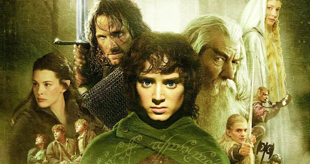

O Senhor dos Anéis é uma trilogia de filmes baseada nos livros de J.R.R. Tolkien. A história acompanha o hobbit Frodo Bolseiro, que recebe a missão de destruir um poderoso anel.
Esse anel pertence ao senhor do mal Sauron e possui grande poder. Frodo e amigos partem em uma jornada perigosa para levá-lo até a montanha onde ele foi criado. Somente lá o anel pode ser destruído.

A jornada acontece na Terra Média, um mundo cheio de reinos, criaturas mágicas e grandes batalhas.
Diretor: Peter Jackson
Baseado em: Livro de J.R.R. Tolkien
Gênero: Fantasia e aventura
Local da gravação: Nova Zelândia
A trilogia foi filmada praticamente ao mesmo tempo, algo raro na história do cinema.
O último filme da trilogia, O Retorno do Rei, ganhou 11 prêmios Oscar.
Os filmes ajudaram a popularizar ainda mais a literatura de fantasia.
A história acontece em um mundo fictício chamado Terra Média.
O Senhor dos Anéis é considerado uma das maiores produções da história do cinema.